lorenz_partial_additive_splitmode_p30_obsnoise005_nd75_init15_autodim__lc_sweepProject: Lorenz_INDpartial_NDInitSweep_autodim_D1_NormTrue__JacobianODE
Launched: 2026-04-22T00:20:37Z
Completed: 2026-04-22T04:20:42Z
Outcome: complete_clean
Git: latent-JacobianODE @ 28c8380
Expected runs: 5
lorenz_partial_additive_splitmode_p30_obsnoise005_nd75_init15_autodim__lc_sweepDescription
Lorenz partial additive coupling, obs_noise=0.05, n_delays=75, prediction_steps=30, traj_init_steps=15. Split reconstruction mode: uniform for encoder-decoder round-trip, most_recent for rollout trajectory (matches val). 5-run LC sweep over {0, 1e-6, 1e-5, 1e-4, 1e-3}. n_target_dims picked by PCA-auto (threshold=0.99). final_perm_identity=true.
Hypothesis
At obs_noise=0.05 the encoder has a harder denoising job. LC should help more at this noise level than at 0.01 because it's a self-consistency regularizer that compensates for noise-driven encoder instability. Expect best LC shifted toward larger values relative to the obsnoise001 companion sweep.
Success criteria
Swept axes (2): model.n_target_dims_pca_cum_var, training.lightning.loop_closure_weight
Chosen run (by best_traj_loss): nw8qqxad — traj_loss=0.00520, MASE=0.7584, R²=0.9861, LC loss=116.087, epoch=156.0
Swept-axis values at chosen run: model.n_target_dims_pca_cum_var=0.990036 · training.lightning.loop_closure_weight=0
Runs analyzed: 5 (expected 5)
| run_idx | run_id | model.n_target_dims_pca_cum_var |
training.lightning.loop_closure_weight |
best_traj_loss | best_MASE | R² | LC loss | epoch |
|---|---|---|---|---|---|---|---|---|
| 0 | nw8qqxad |
0.990036 | 0 | 0.00520 | 0.7584 | 0.9861 | 116.087 | 156.0 |
| 1 | h2ytbitb |
0.990036 | 1.0e-06 | 0.00607 | 0.7906 | 0.9838 | 30.546 | 111.0 |
| 3 | 726vvxyq |
0.990036 | 1.0e-04 | 0.00630 | 0.8121 | 0.9831 | 0.765 | 82.0 |
| 4 | c86yvz74 |
0.990036 | 0.001 | 0.00637 | 0.8050 | 0.9830 | 0.160 | 95.0 |
| 2 | 1kizyazt |
0.990036 | 1.0e-05 | 0.00647 | 0.8050 | 0.9827 | 5.454 | 76.0 |
| Criterion | Verdict | Note |
|---|---|---|
| All 5 runs train without divergence | Unknown | |
| Best val traj_loss at LC > 0 shows a larger fractional improvement over LC=0 than the obsnoise001 companion | Unknown | |
| lc_loss_at_best_tl bounded | Unknown | |
| λ_max of best-LC run is positive and closer to empirical Lorenz than LC=0's value | Unknown |
Automated verdicts use simple numeric-threshold parsing and may mis-classify qualitative criteria. The Discussion section below takes precedence.
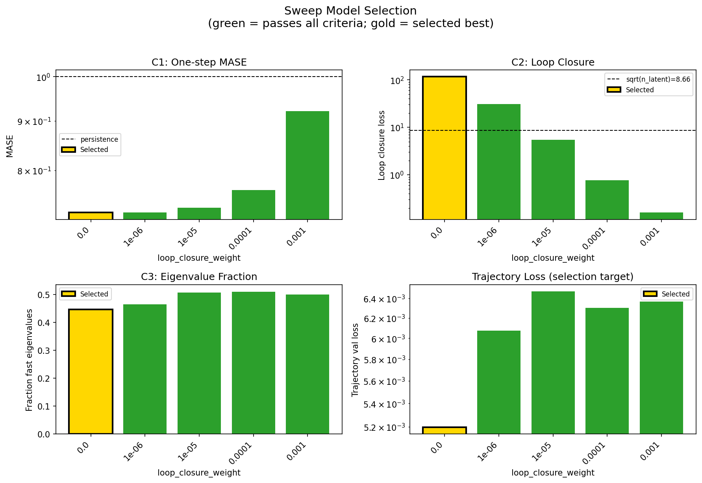
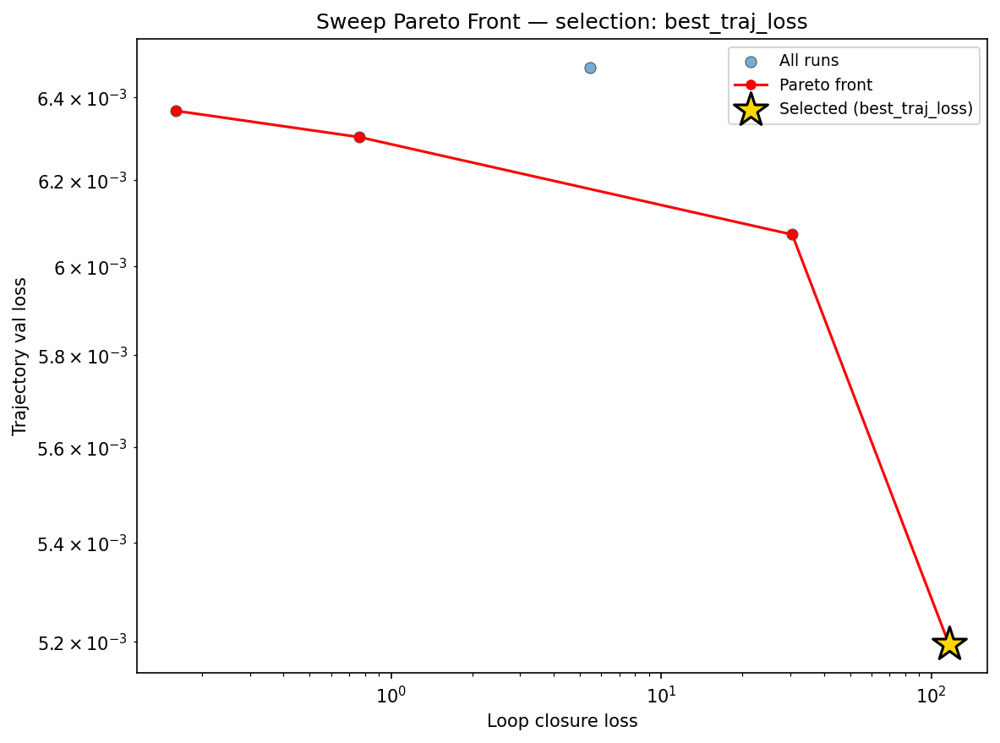
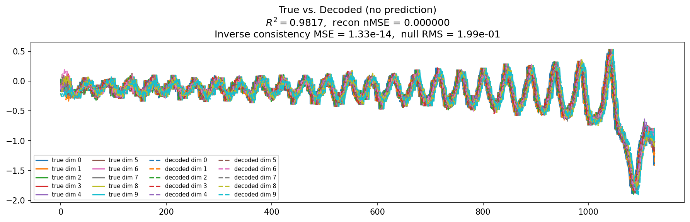
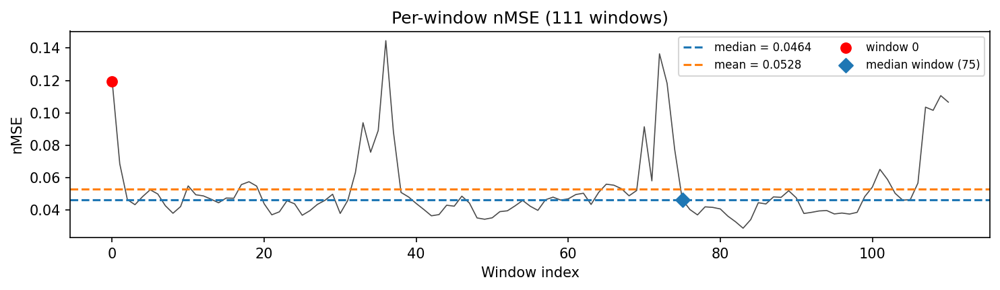
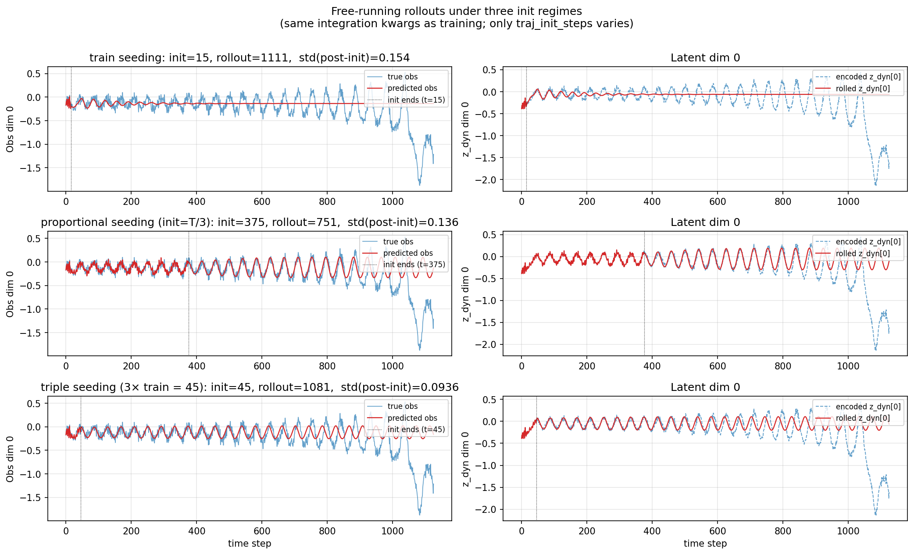
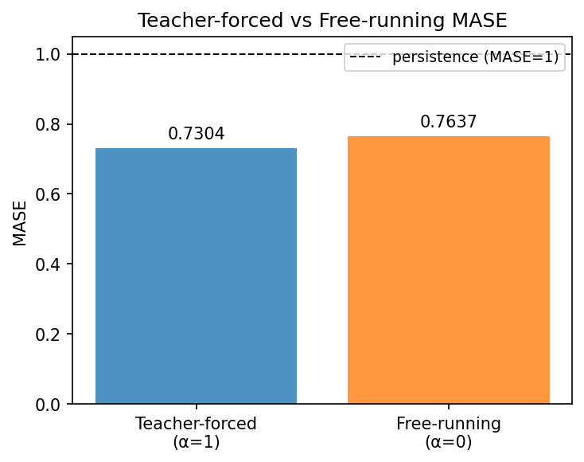
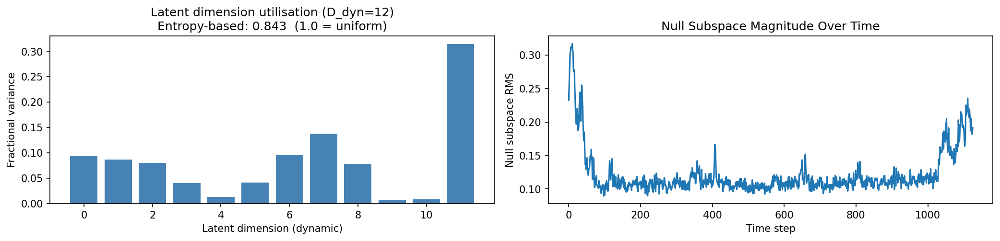
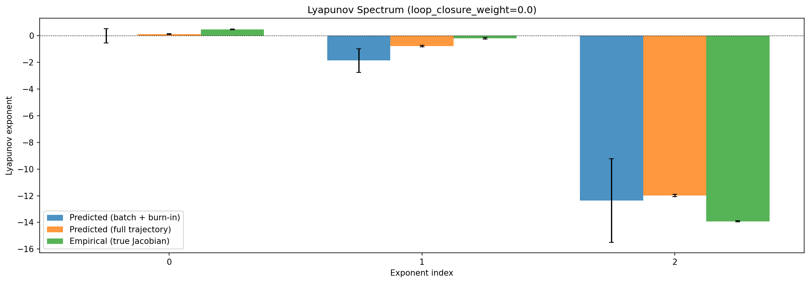
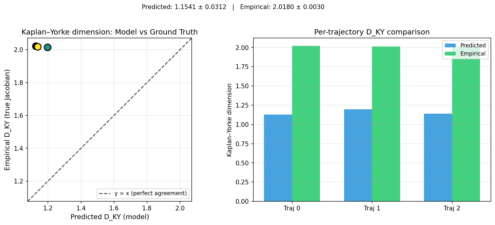
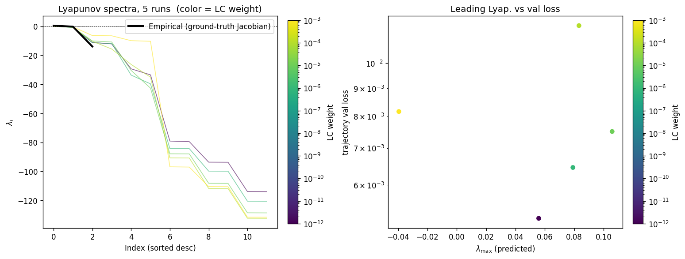
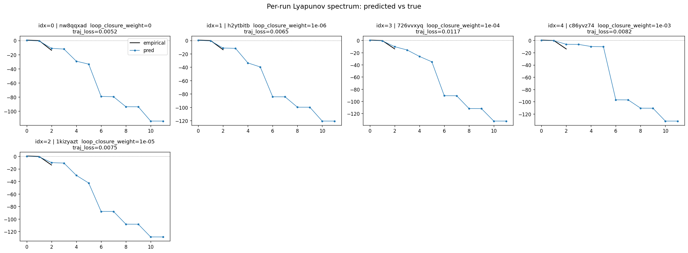
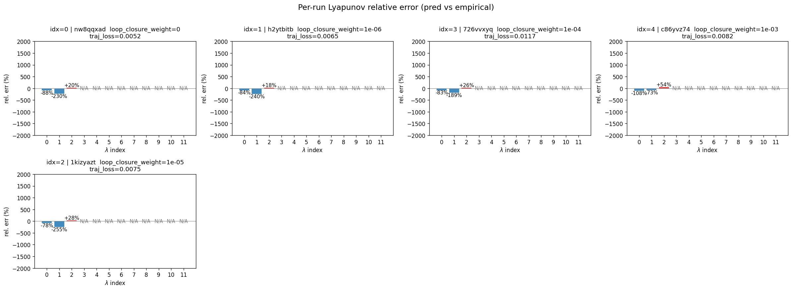
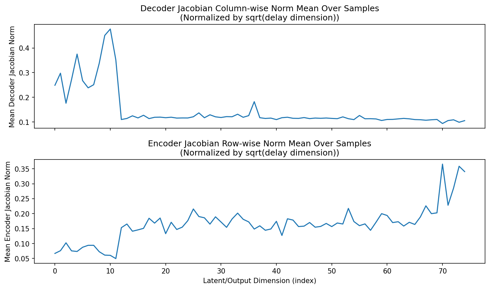
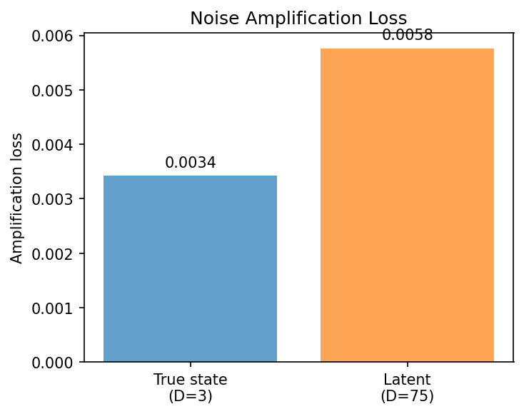
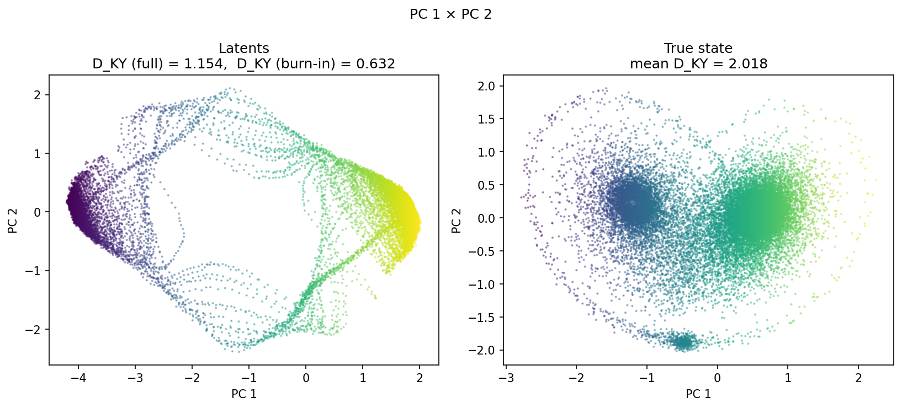
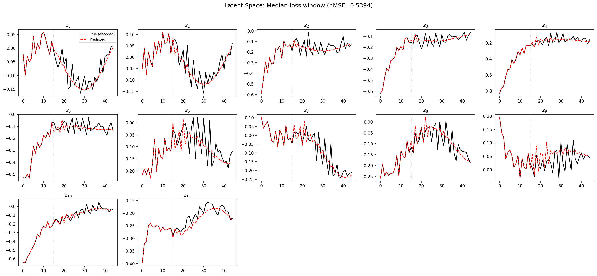
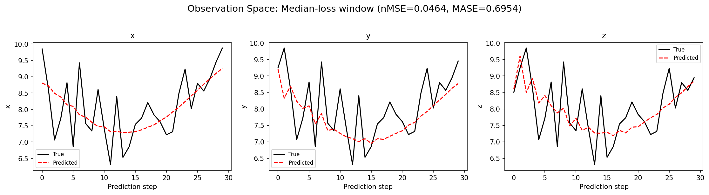
(to be written)
run_analytics stdoutrun_analyticsNo run_id provided — selecting best run from group 'lorenz_partial_additive_splitmode_p30_obsnoise005_nd75_init15_autodim__lc_sweep' ...
Found 5 total runs in JacobianODE/Lorenz_INDpartial_NDInitSweep_autodim_D1_NormTrue__JacobianODE (group=lorenz_partial_additive_splitmode_p30_obsnoise005_nd75_init15_autodim__lc_sweep)
All runs (state, loop_closure_weight, tangent_entropy_weight, kl_dyn_weight):
nw8qqxad: state=finished, lc=0.0, te=0.0, kl_dyn=0.0
h2ytbitb: state=finished, lc=1e-06, te=0.0, kl_dyn=0.0
726vvxyq: state=finished, lc=0.0001, te=0.0, kl_dyn=0.0
c86yvz74: state=finished, lc=0.001, te=0.0, kl_dyn=0.0
1kizyazt: state=finished, lc=1e-05, te=0.0, kl_dyn=0.0
slurm_timeout_min not found in any run config — falling back to 180 min
Including nw8qqxad (lc=0.0): use_all_runs=True (state=finished)
Including h2ytbitb (lc=1e-06): use_all_runs=True (state=finished)
Including 726vvxyq (lc=0.0001): use_all_runs=True (state=finished)
Including c86yvz74 (lc=0.001): use_all_runs=True (state=finished)
Including 1kizyazt (lc=1e-05): use_all_runs=True (state=finished)
Found 5 effectively-done sweep runs:
loop_closure_weight=0.0, tangent_entropy_weight=0.0, kl_dyn_weight=0.0 -> run_id=nw8qqxad
loop_closure_weight=1e-06, tangent_entropy_weight=0.0, kl_dyn_weight=0.0 -> run_id=h2ytbitb
loop_closure_weight=1e-05, tangent_entropy_weight=0.0, kl_dyn_weight=0.0 -> run_id=1kizyazt
loop_closure_weight=0.0001, tangent_entropy_weight=0.0, kl_dyn_weight=0.0 -> run_id=726vvxyq
loop_closure_weight=0.001, tangent_entropy_weight=0.0, kl_dyn_weight=0.0 -> run_id=c86yvz74
n_dims=75, n_latent=75, n_dyn=12, dt=0.0150
run=nw8qqxad: DiagnosticMetrics(one_step_mase=0.7234463095664978, loop_closure_loss=116.08728790283203, fast_eigenvalue_fraction=0.44708332419395447, trajectory_val_loss=0.005195337347686291) (from W&B history)
run=h2ytbitb: DiagnosticMetrics(one_step_mase=0.7240275144577026, loop_closure_loss=30.545995712280273, fast_eigenvalue_fraction=0.4647916555404663, trajectory_val_loss=0.006073218770325184) (from W&B history)
run=1kizyazt: DiagnosticMetrics(one_step_mase=0.7321481108665466, loop_closure_loss=5.454060077667236, fast_eigenvalue_fraction=0.5077083110809326, trajectory_val_loss=0.006471812725067139) (from W&B history)
run=726vvxyq: DiagnosticMetrics(one_step_mase=0.7634537220001221, loop_closure_loss=0.764617919921875, fast_eigenvalue_fraction=0.5099999904632568, trajectory_val_loss=0.006303063128143549) (from W&B history)
run=c86yvz74: DiagnosticMetrics(one_step_mase=0.9208614230155945, loop_closure_loss=0.15986305475234985, fast_eigenvalue_fraction=0.5, trajectory_val_loss=0.006366642192006111) (from W&B history)
Ranking method: best_traj_loss
Best run ID: nw8qqxad
Best loop_closure_weight: 0.0
Best tangent_entropy_weight: 0.0
Best kl_dyn_weight: 0.0
Best traj loss: 0.005195
Criteria applied: ['C2', 'C3']
Surviving: 5 / 5
Auto-selected run_id: nw8qqxad
======================================================================
PARETO FRONTIER RUNS (4 runs)
======================================================================
Run ID LC Loss Traj Val Loss
------------ -------------- --------------
c86yvz74 0.159863 0.006367
726vvxyq 0.764618 0.006303
h2ytbitb 30.545996 0.006073
nw8qqxad 116.087288 0.005195 <-- selected
======================================================================
RANKING METHOD COMPARISON (over 5 survivors)
======================================================================
Method Run ID LC Loss Traj Val Loss
---------------------- ------------ -------------- --------------
best_traj_loss nw8qqxad 116.087288 0.005195 <-- active
pareto_knee h2ytbitb 30.545996 0.006073
geo_rank c86yvz74 0.159863 0.006367
minimax_rank 726vvxyq 0.764618 0.006303
geo_log_score nw8qqxad 116.087288 0.005195
minimax_log_score h2ytbitb 30.545996 0.006073
======================================================================
Loading run nw8qqxad from JacobianODE/Lorenz_INDpartial_NDInitSweep_autodim_D1_NormTrue__JacobianODE ...
Train dataset shape: torch.Size([23782, 45, 75])
Validation dataset shape: torch.Size([7567, 45, 75])
Test dataset shape: torch.Size([3243, 45, 75])
Train trajectories dataset shape: torch.Size([22, 1126, 75])
Validation trajectories dataset shape: torch.Size([7, 1126, 75])
Test trajectories dataset shape: torch.Size([3, 1126, 75])
Loading checkpoint epoch=156-step=31400.ckpt...
Computing reconstruction ...
Computing MASE ...
Teacher-forced MASE: 0.7304
Free-running MASE: 0.7637
Computing latent utilization ...
Entropy-based utilization: 0.843
Null subspace mean RMS: 1.261819e-01
Computing Lyapunov exponents ...
Computing full-trajectory Lyapunov (3 test trajs, T=1126) ...
Predicted Lyapunov exponents (batch+burn-in, 128 windowed trajs):
λ_1 = -0.0167 ± 0.5334
λ_2 = -1.8666 ± 0.8908
λ_3 = -12.3483 ± 3.1324
λ_4 = -13.5119 ± 3.0848
λ_5 = -27.0768 ± 7.6804
λ_6 = -30.8440 ± 5.7183
λ_7 = -79.9006 ± 20.6512
λ_8 = -80.7043 ± 19.0142
λ_9 = -94.9062 ± 24.4619
λ_10 = -95.3900 ± 24.2197
λ_11 = -115.1510 ± 27.9961
λ_12 = -115.3588 ± 27.9797
Predicted Lyapunov exponents (full-length, 3 test trajs):
λ_1 = +0.1219 ± 0.0324
λ_2 = -0.7901 ± 0.0504
λ_3 = -11.9891 ± 0.0792
λ_4 = -13.0742 ± 0.0722
λ_5 = -28.1494 ± 0.6798
λ_6 = -31.5693 ± 0.2441
λ_7 = -82.4886 ± 0.4883
λ_8 = -82.7222 ± 0.4549
λ_9 = -97.7590 ± 0.3010
λ_10 = -97.8005 ± 0.3164
λ_11 = -117.7075 ± 0.1542
λ_12 = -117.7342 ± 0.1597
Empirical Lyapunov exponents (mean ± std):
λ_1 = +0.4677 ± 0.0259
λ_2 = -0.2173 ± 0.0549
λ_3 = -13.9174 ± 0.0513
Mean KY dim (predicted): 1.154 ± 0.031
Mean KY dim (empirical): 2.018 ± 0.003
Mean KY dim (burn-in): 0.632 ± 0.614
Computing prediction windows ...
Windows: 111 — nMSE min=0.0288, median=0.0464, mean=0.0528, max=0.1446
Computing long-trajectory free-running rollouts ...
Computing encoder/decoder Jacobians ...
encoder_jacobian: (128, 75, 75)
decoder_jacobian: (128, 75, 75)
Computing amplification loss ...
Amplification loss — True state: 0.003419
Amplification loss — Latent: 0.005764